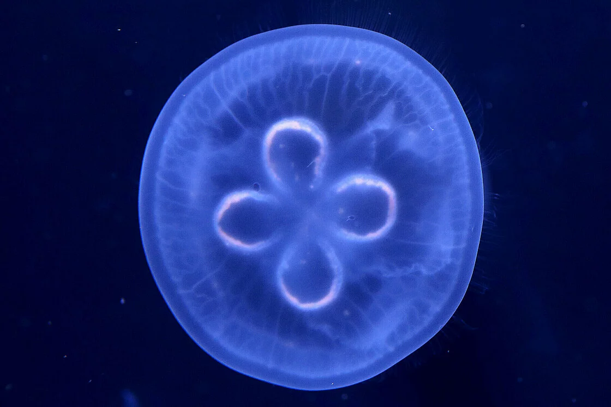

Moon Jellyfish

The Moon Jellyfish also known as the Aurelia aurita is a species of the genus Aurelia. Moon jellyfish are found in oceans around the world. They prefer a warm environment and often live near coastlines in the Atlantic, Pacific, and Indian oceans.
Back to Home page